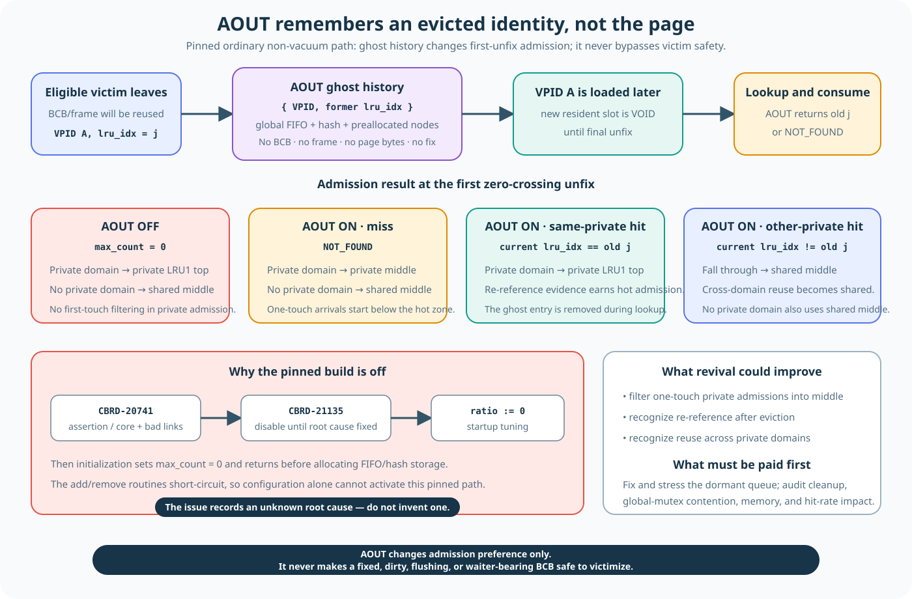

Pinned server path에서는 AOUT이 비활성화되어 있습니다
자료구조는 source에 남아 있지만 startup이 data_aout_ratio = 0.0을 강제합니다. Initialization은 ghost node를 할당하지 않고 add/lookup helper도 즉시 반환합니다. 현재 replacement는 Lecture 12의 INVALID/VOID/private/shared 3-zone LRU path입니다.
AOUT은 source에 남아 있지만 비활성인 admission-history code입니다. Pinned build에서 page bytes를 저장하거나 victim을 고르지 않습니다.
VPID와 이전 LRU index로 과거 eviction을 기억합니다

{ VPID, former lru_idx, prev, next }
Entry에는 BCB, frame, latch, fix count, dirty generation, page copy가 없습니다. 실제 BCB/frame pair는 이미 다른 page를 나타낼 수 있습니다. 전역 FIFO 하나, free-node list, VPID hash, Aout_mutex가 record를 관리합니다.
A = min(floor(N × data_aout_ratio), 32,768) hash tables = max(floor(A / 1,000), 1)
Pinned 기본 ratio가 0이므로 A = 0입니다. 활성화된다고 가정하면 FIFO가 가득 찼을 때 가장 오래된 bottom entry를 재사용합니다.
Ghost hit는 reload 뒤의 첫 배치 위치를 바꾸도록 설계되었습니다
| Reload context | Retained placement branch |
|---|---|
| Enabled private-LRU assignment; same-private ghost hit | 현재 private LRU1 top |
| Enabled private-LRU assignment; AOUT miss | 현재 private LRU2 middle |
| Enabled private-LRU assignment; 다른 former LRU | Shared LRU2 middle |
| Enabled private-LRU assignment 없음 | Shared LRU2 middle |
이것은 load 뒤의 admission ranking입니다. 이전 victim을 고르거나 ownership을 증명하거나 reuse를 허가하지 않습니다. AOUT-off가 없앤 것은 ghost hit/miss 세분화이지 현재의 두 path가 아닙니다. Enabled assignment가 있으면 private LRU1 top, 없으면 shared LRU2 middle로 갑니다.
퇴출 이력을 기억하면 scan 예제에서 도움이 될까?
AOUT를 활성화했다고 가정해 봅시다. B가 같은 private 배정 PB에서 두 페이지를 다시 읽습니다. H1에는 PB에서 퇴출된 ghost 기록이 남아 있고 S1에는 기록이 없습니다. 경계 조정 전 H1은 PB/LRU1에, S1은 PB/LRU2에 들어갑니다. AOUT가 꺼져 있으면 두 페이지의 일반 최초 배치는 모두 PB/LRU1입니다. 어느 ghost 경우에도 페이지 bytes를 보관하지 않습니다. Miss와 reload는 이미 일어났습니다.
기대 효과와 비용: 측정된 개선은 아님
이력이 없는 scan 페이지를 LRU1 아래에 넣으면 재사용 페이지에 주는 간섭이 줄어들 수 있습니다. 같은 domain의 ghost hit는 더 강한 초기 보호를 다시 받을 수 있습니다. 반면 재사용 페이지라도 ghost가 만료되었으면 이력에서는 miss이고, 저장된 인덱스는 그것을 사용하던 세션보다 오래 남을 수 있습니다. 이전 인덱스가 다르면 reload한 페이지는 private 소유자에게 돌아가는 것이 아니라 shared LRU2에 들어갑니다. 이런 차이는 hit rate와 영역 간 경쟁을 유리하게도 불리하게도 바꿀 수 있습니다.
그 뒤에는 private/shared의 공통 재사용 규칙이 그대로 적용됩니다. Migration과 특수 unfix를 먼저 확인하고, LRU1은 유지, LRU2는 age 검사, LRU3는 일반적으로 boost합니다. AOUT는 최초 배치의 판단 근거를 바꿀 뿐, 공정성·안전한 재사용·성능을 새로 보장하지 않습니다.
AOUT을 다시 활성화하려면 새로운 engineering review가 필요합니다
Forced-zero comment는 CBRD-20741을 가리키며 revision history는 CBRD-21135도 안내합니다. 현재 evidence로는 root cause를 알 수 없습니다. Forced-zero line 하나만 제거하는 것은 complete fix가 아닙니다.
Retained comment의 “LRU + Aout of 2Q”는 design structure를 설명하며 active startup behavior를 증명하지 않습니다. Revival에는 concurrency, memory, policy와 측정된 performance validation이 필요합니다. 기대 효과를 측정된 performance claim으로 쓰면 안 됩니다.
Verified dormant source: system_parameter.c:3463–3474,9931–9987; page_buffer.c:635–666,5802–5903,6885–6994,10468–10636.
다시 활성화하는 실험에서 무엇을 검증해야 할까?
- 실제 tuning, capacity, ghost hit/miss, 최초 배치 분기를 추적합니다. Ratio만 수정해서는 forced-zero tuning을 우회하지 못합니다.
- 선택한 리비전에서 과거 실패를 재현하거나 해소 근거를 확보합니다. 동시 삽입과 조회·제거 중 FIFO/hash/free-node 일치, 용량 한계, 노드 재활용을 검증합니다.
- Private 리스트의 해제·재배정, 저장 인덱스의 유효성, 같은 domain과 다른 domain의 reload, 일반·특수 unfix 경로를 실행합니다.
- 같은 pool과 workload로 활성·비활성 실행을 비교합니다. 반복 working set과 scan, 만료된 ghost 이력, cross-domain 재사용을 포함합니다. Miss, domain별 잔류량, 메모리, 전역
Aout_mutex경합과 throughput을 측정합니다.
과거 assertion/core는 원인이 확인되지 않은 역사적 근거이며, 고정 리비전의 비활성 구현에서도 재현되는지는 미확인입니다. 위 항목은 검증 과제이지 새 실행의 결과가 아닙니다. 남아 있는 소스와 과거 근거 확인하기.
코드가 있으면 활성 정책일까요?
AOUT 구조가 소스에 있다는 사실만으로 pinned server path의 hit rate 변화를 설명할 수 있을까요?
설명 펼치기
그 사실만으로는 설명할 수 없습니다. Pinned server path에서 AOUT은 비활성화되어 있습니다. 남아 있는 구조는 가능한 ghost-history 메커니즘을 보여줄 뿐, 실제 workload 동작의 증거가 아닙니다. 측정값을 AOUT에 귀속하려면 측정한 build가 해당 경로를 활성화하고 실행한다는 증거가 필요합니다.